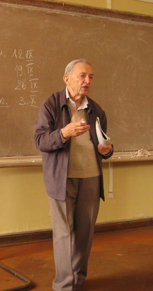

Partial Differential Equations and Applications
in Honour of Mark Vishik on the occasion of his 90th birthday
IITP, Moscow, Russia
June 4-7, 2012
Confirmed participants (with abstracts of talks)
|  |
Partial Differential Equations and Applications in Honour of Mark Vishik on the occasion of his 90th birthday IITP, Moscow, Russia June 4-7, 2012 Confirmed participants (with abstracts of talks)
|
Publications of Mark Vishik Pupils of Mark Vishik
|
Organizing committee:
Alexander Kuleshov (Chair), Natalia Barinova, Maksim Chuyashkin, Andrey Fursikov, Grigory Kabatiansky, Elena Michurina, Elena Sidorova, Michael Tsfasman, Vladimir Venets Scientific committee: Andrey Fursikov (Chair), Vladimir Chepyzhov, Alexander Demidov, Alexander Komech, Andrey Komech, Sergey Kuksin, Alexander Shnirelman, Boris Vainberg |
With the participation and support of: |